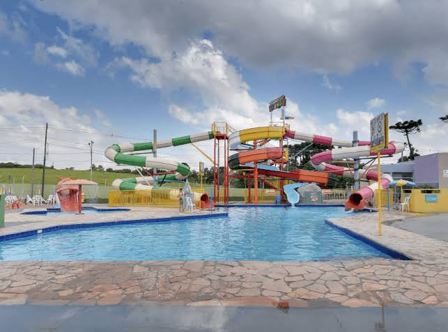
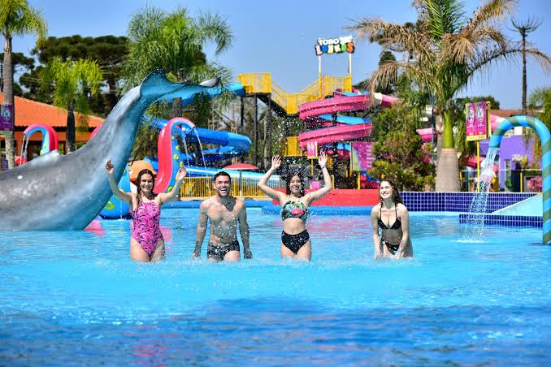
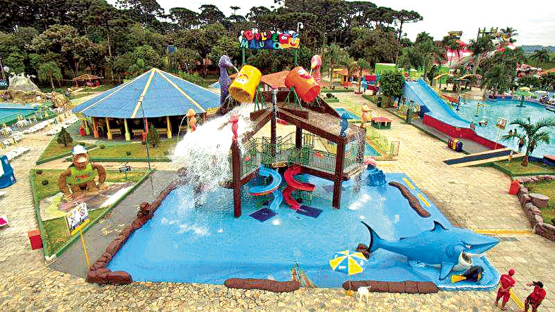

Sobre o Acqua Park
O Acqua Park Araucária é um parque aquático localizado na cidade de Araucária, no estado do Paraná. É um lugar voltado para o lazer, a diversão e o entretenimento de pessoas de diferentes idades. O parque conta com diversas atrações aquáticas, como piscinas, toboáguas, piscina de ondas e outras opções para aproveitar os dias de calor. Cada atração oferece uma experiência diferente, desde momentos mais tranquilos para relaxar até atividades mais animadas para quem gosta de aventura e emoção. Além disso, o local é uma ótima opção para passear com a família e os amigos, sair da rotina e aproveitar o tempo livre. Os visitantes podem se divertir, descansar e criar boas lembranças. O Acqua Park Araucária também é uma opção de lazer para moradores da região e pessoas que vêm de outras cidades, contribuindo para o entretenimento e o turismo local. Assim, o parque se destaca como um espaço para aproveitar momentos agradáveis, reunir pessoas e desfrutar de diferentes atividades recreativas.

Importância Cultural
O Acqua Park Araucária possui uma grande importância cultural e social para a cidade, pois é um espaço de lazer e diversão para moradores e visitantes de outras regiões. O parque permite que famílias e amigos passem momentos agradáveis juntos, aproveitando as piscinas, os toboáguas e as demais atrações. Além disso, o local contribui para o turismo de Araucária, atraindo pessoas que desejam conhecer o parque e aproveitar seus momentos de descanso. Também ajuda a movimentar a economia local, gerando oportunidades de trabalho e beneficiando outros comércios da região. Dessa forma, o Acqua Park Araucária se torna um lugar importante para o lazer, a convivência social e o desenvolvimento da cidade.

Contexto Histórico
O Acqua Park Araucária foi inaugurado em 1998, na cidade de Araucária, no Paraná. Desde o início, o parque surgiu com o objetivo de oferecer um espaço de lazer, diversão e entretenimento para as famílias da região. Com o passar dos anos, o local foi ganhando reconhecimento e se tornando uma opção de passeio para moradores de Araucária e de outras cidades próximas a Curitiba. Ao longo de sua história, o parque passou por melhorias e ampliou suas atrações, oferecendo piscinas, toboáguas, piscina de ondas e outros espaços de diversão. Além de proporcionar momentos de lazer, o Acqua Park também contribui para o turismo e para a economia local, atraindo visitantes e movimentando o comércio da região. Atualmente, é um espaço conhecido de lazer aquático na região de Araucária.

Memórias do Parque
Fotos que mostram momentos marcantes do Acqua Park Araucária.

Diversão da familia
Curiosidade 1
O Araucária Acqua Park, situado na região metropolitana de Curitiba, ocupa uma área impressionante de 240 mil metros quadrados. O grande diferencial do complexo é a fusão perfeita entre a adrenalina dos toboáguas e a natureza preservada.
Curiosidade 2
O Araucária Acqua Park possui diversas curiosidades interessantes que explicam o seu sucesso na Grande Curitiba, começando pelo seu pioneirismo ao inaugurar a primeira piscina de ondas do Sul do Brasil. Aberto ao público em 30 de novembro de 1998, o complexo ocupa uma área gigantesca de aproximadamente 240 mil metros quadrados, o que equivale a quase 30 campos de futebol. Uma das atrações mais icônicas, a Acqua Cobra, levou mais de dois anos para ser construída e faz dupla com o Tobo Cobra, um toboágua fechado com 70 metros de extensão que simula o interior de uma serpente. Outro fato curioso é a infraestrutura voltada para confraternizações, pois o espaço conta com mais de 25 churrasqueiras coletivas que comportam até 50 pessoas cada, além de um restaurante de eventos com capacidade para mais de 1.500 visitantes.